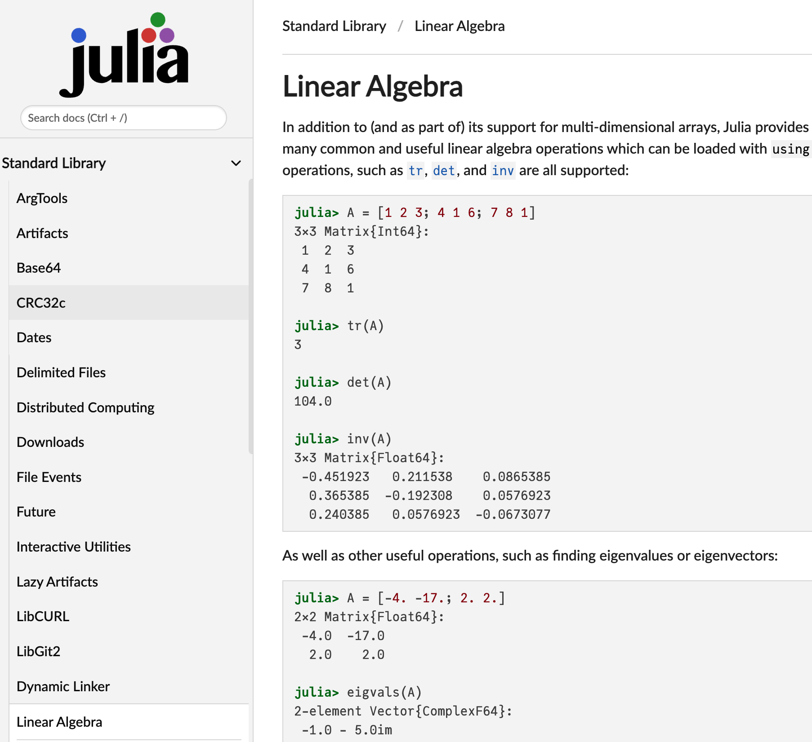
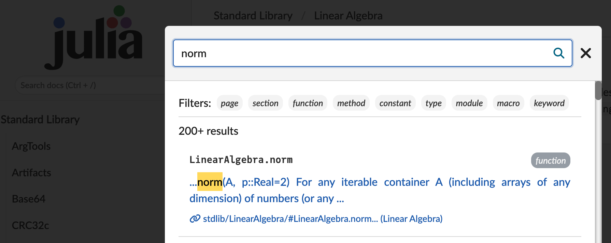

$ julia
_
_ _ _(_)_ | Documentation: https://docs.julialang.org
(_) | (_) (_) |
_ _ _| |_ __ _ | Type "?" for help, "]?" for Pkg help.
| | | | | | |/ _` | |
| | |_| | | | (_| | | Version 1.11.1 (2024-10-16)
_/ |\__'_|_|_|\__'_| | Official https://julialang.org/ release
|__/ |
julia>
1 Julia ecosystem
Julia is a high-level, general-purpose dynamic programming language, still designed to be fast and productive, for e.g. data science, artificial intelligence, machine learning, modeling and simulation, most commonly used for numerical analysis and computational science.

The work on Julia began in 2009 when Jeff Bezanson, Stefan Karpinski, Alan Edelman and Viral B. Shah set out to create a free language that was both high-level and fast. The first public appearance is in 2012. Julia’s syntax is now considered stable, since version 1.0 in 2018.
Julia can be easily downloaded and installed. See the download page where we can find the following.
Install the latest Julia version by running this in your terminal:
curl -fsSL https://install.julialang.org | shInstall the latest Julia version from the Microsoft Store by running this in the command prompt:
winget install julia -s msstoreOn the Julia official webpage one can find the following summary of Julia ecosystem.

1.0.1 Data Visualization and Plotting
Data visualization has a complicated history. Plotting software makes trade-offs between features and simplicity, speed and beauty, and a static and dynamic interface. Some packages make a display and never change it, while others make updates in real-time.
Plots.jl is a visualization interface and toolset. It provides a common API across various backends, like GR.jl, PyPlot.jl, and PlotlyJS.jl. Makie.jl is a sophisticated package for complex graphics and animations. Users who are used to “grammar of graphics” plotting APIs should take a look at Gadfly.jl. VegaLite.jl provides the Vega-Lite grammar of interactive graphics interface as a Julia package. For those who do not wish to leave the comfort of the terminal, there is also UnicodePlots.jl.

1.0.2 Build, Deploy or Embed Your Code
Julia makes it possible to build complete applications. Write web UIs with Dash.jl and Genie.jl or native UIs with Gtk4.jl. Pull data from a variety of databases. Build shared libraries and executables with PackageCompiler. Deploy on a webserver with HTTP.jl or embedded devices. Powerful shell integration make it easy to managing other processes.
Julia has foreign function interfaces for C, Fortran, C++, Python, R, Java, Mathematica, Matlab, and many other languages. Julia can also be embedded in other programs through its embedding API. Julia’s PackageCompiler makes it possible to build binaries from Julia programs that can be integrated into larger projects. Python programs can call Julia using juliacall. R programs can do the same with R’s JuliaCall, which is demonstrated by calling MixedModels.jl from R. Mathematica supports calling Julia through its External Evaluation System.

1.0.3 Interact with your Data
The Julia data ecosystem provides DataFrames.jl to work with datasets, and perform common data manipulations. CSV.jl is a fast multi-threaded package to read CSV files and integration with the Arrow ecosystem is in the works with Arrow.jl. Online computations on streaming data can be performed with OnlineStats.jl. The Queryverse provides query, file IO and visualization functionality. In addition to working with tabular data, the JuliaGraphs packages make it easy to work with combinatorial data.
Julia can work with almost all databases using JDBC.jl and ODBC.jl drivers. In addition, it also integrates with the Spark ecosystem through Spark.jl.

1.0.4 Scalable Machine Learning
The MLJ.jl package provides a unified interface to common machine learning algorithms, which include generalized linear models, decision trees, and clustering. Flux.jl and Lux.jl are powerful packages for Deep Learning. Packages such as Metalhead.jl, ObjectDetector.jl, and TextAnalysis.jl provide ready to use pre-trained models for common tasks. AlphaZero.jl provides a high performance implementation of the reinforcement learning algorithms from AlphaZero. Turing.jl is a best in class package for probabilistic programming.

1.0.5 Rich Ecosystem for Scientific Computing
Julia is designed from the ground up to be very good at numerical and scientific computing. This can be seen in the abundance of scientific tooling written in Julia, such as the state-of-the-art differential equations ecosystem (DifferentialEquations.jl), optimization tools (JuMP.jl and Optim.jl), iterative linear solvers (IterativeSolvers.jl), Fast Fourier transforms (AbstractFFTs.jl), and much more. General purpose simulation frameworks are available for Scientific Machine Learning, Quantum computing and much more.
Julia also offers a number of domain-specific ecosystems, such as in biology (BioJulia), operations research (JuMP Dev), image processing (JuliaImages), quantum physics (QuantumBFS), nonlinear dynamics (JuliaDynamics), quantitative economics (QuantEcon), astronomy (JuliaAstro) and ecology (EcoJulia). With a set of highly enthusiastic developers and maintainers, the scientific ecosystem in Julia continues to grow rapidly.

1.0.6 Parallel and Heterogeneous Computing
Julia is designed for parallelism, and provides built-in primitives for parallel computing at every level: instruction level parallelism, multi-threading, GPU computing, and distributed computing. The Celeste.jl project achieved 1.5 PetaFLOP/s on the Cori supercomputer at NERSC using 650,000 cores.
The Julia compiler can also generate native code for GPUs. Packages such as DistributedArrays.jl and Dagger.jl provide higher levels of abstraction for parallelism. Distributed Linear Algebra is provided by packages like Elemental.jl and TSVD.jl. MPI style parallelism is also available through MPI.jl.
Julia is a modern language and comes with cloud computing and more, see JuliaHub webpage and the JuliaHub help page.
The Modern Platform for Technical Computing. A single place for modeling, simulation, and user built applications with the Julia language. Designed with access to CPUs and GPUs for multi-threading, parallel and distributed computing, JuliaHub’s supercomputing infrastructure allows teams to model breakthrough science and technology.
The Julia programming language has its own conference, see the JuliaCon 2024.
Welcome to JuliaCon 2024, the premier annual conference for the Julia programming language community! This exciting event brings together developers, researchers, and enthusiasts from around the globe to celebrate and explore the power and versatility of Julia.

2 Code execution
There are different ways to execute Julia code:
- within a
.ipynbfile, that is a Jupyter notebook; - directly into the Julia REPL;
- from a script file
.jl, either in the REPL or in the terminal; - …
2.1 Jupyter notebooks

You can write some Julia code inside a Jupyter notebook and execute the code. To interact with the Julia language using Jupyter notebook, please install IJulia.jl.
IJulia is a Julia-language backend combined with the Jupyter interactive environment (also used by IPython). This combination allows you to interact with the Julia language using Jupyter/IPython’s powerful graphical notebook, which combines code, formatted text, math, and multimedia in a single document. IJulia is a Jupyter language kernel and works with a variety of notebook user interfaces. In addition to the classic Jupyter Notebook, IJulia also works with JupyterLab, a Jupyter-based integrated development environment for notebooks and code. The nteract notebook desktop supports IJulia with detailed instructions for its installation with nteract.
Try to execute the code of example.ipynb.
2.2 The Julia REPL
Julia comes with a full-featured interactive command-line REPL (read-eval-print loop) built into the julia executable. In addition to allowing quick and easy evaluation of Julia statements, it has a searchable history, tab-completion, many helpful keybindings, and dedicated help and shell modes. The REPL can be started by simply calling julia with no arguments or double-clicking on the executable:
After Julia is launched you can start computing.
1+12Or print some text.
print("Hello!")Hello!2.3 Julia scripts
You can also write some code in a .jl script.
$ cat data/lecture1/example.jl
println("Hello!")and execute the code either in the REPL:
include("data/lecture1/example.jl")Hello!or in a terminal with the command $ julia example.jl.
3 Basic examples of code
x = 1
2x2x = sqrt(2)1.4142135623730951# unicode is great
x = √(2)1.4142135623730951😄 = sqrt(2)
2😄2.8284271247461903Some functions.
# this is a function
function f(x)
return 2x+1
endf (generic function with 2 methods)# this also
f(x) = 2x+1f (generic function with 2 methods)# this also: but f is not available anymore
g = x -> 2x^2#28 (generic function with 1 method)# be careful of the priorities
g(1)2Hello(name) = "Hello " * name * "!"
Hello("Alban")"Hello Alban!"x = [1 3 12]
println("x[2] = ", x[2])
x[2] = 5
println("x[2] = ", x[2])x[2] = 3
x[2] = 5The following function has side effects that can be dangerous.
function f(x, y)
x[1] = 42 # mutates x
y = 7 + sum(x) # new binding for y, no mutation
return y
end
a = [4, 5, 6]
b = 3
println("f($a, $b) = ", f(a, b))
println("a = ", a, " # a[1] is changed to 42 by f")
println("b = ", b, " # not changed")f([4, 5, 6], 3) = 60
a = [42, 5, 6] # a[1] is changed to 42 by f
b = 3 # not changedWhen a function has side effects, please use the ! convention. See Argument Passing Behavior.
function put_at_second_place!(x, value)
x[2] = value
return nothing
end
x = [1 3 12]
println("x[2] = ", x[2])
put_at_second_place!(x, 5)
println("x[2] = ", x[2])
put_at_second_place!(x[1:3], 15) # be careful if you give a slice
println("x[2] = ", x[2])x[2] = 3
x[2] = 5
x[2] = 5A function may have several methods.
Σ(x::Float64, y::Float64) = 2x + yΣ (generic function with 1 method)Σ(2.0, 3.0)7.0Σ(2, 3.0)MethodError: no method matching Σ(::Int64, ::Float64) The function `Σ` exists, but no method is defined for this combination of argument types. Closest candidates are: Σ(::Float64, ::Float64) @ Main In[48]:1 Stacktrace: [1] top-level scope @ In[50]:1
h(x::Number, y::Number ) = 2x - y
h(x::Int, y::Int ) = 2x * y
h(x::Float64, y::Float64) = 2x + yh (generic function with 3 methods)println("h(2, 3.0) = ", h(2, 3.0))
println("h(2, 3 ) = ", h(2, 3))
println("h(2.0, 3.0) = ", h(2.0, 3.0))h(2, 3.0) = 1.0
h(2, 3 ) = 12
h(2.0, 3.0) = 7.04 Documentation
In the Julia documentation, you may find:
- some important Links;
- a comparison to other languages;
- a list of advantages of using Julia
but also:
- manuals;
- base documentation;
- standard librairies documentation;
- developer documentation.
Note
In Julia, it is quite common to have the documentation in the form of manuals or tutorials. See Getting Started with Differential Equations in Julia for instance.
Example. Search how to compute the norm of a vector.

The norm function comes from the standard librairy LinearAlgebra.

However, we are not directly at the right place, so I recommend to use the Search docs field.

And now, we have the documentation.

Note
It is also possible to use the help mode:
using LinearAlgebra
?norm5 Editors and IDEs


I recommend to use VS Code. You can download it here. See the Julia Visual Studio Code Documentation.
Julia for Visual Studio Code is a powerful, free IDE for the Julia language. Visual Studio Code is a powerful and customizable editor. With a completely live environment, Julia for VS Code aims to take the frustration and guesswork out of programming and put the fun back in. We build on Julia’s unique combination of ease-of-use and performance. Beginners and experts can build better software more quickly, and get to a result faster. Julia is an officially supported language on the VS Code docs.
6 Exercise
6.1 Context: Least Squares Regression Line
We propose a first exercise about simple linear regression. The data are excerpted from this example and saved into data.csv. We propose an ordinary least squares formulation which is a type of linear least squares method for choosing the unknown parameters in a linear regression model by the principle of least squares: minimizing the sum of the squares of the differences between the observed dependent variable (values of the variable being observed) in the input dataset and the output of the (linear) function of the independent variable.

Given a set of m data points y_{1}, y_{2}, \dots, y_{m}, consisting of experimentally measured values taken at m values x_{1}, x_{2}, \dots, x_{m} of an independent variable (x_i may be scalar or vector quantities), and given a model function y=f(x,\beta), with \beta =(\beta_{1},\beta_{2},\dots ,\beta_{n}), it is desired to find the parameters \beta_j such that the model function “best” fits the data. In linear least squares, linearity is meant to be with respect to parameters \beta_j, so f(x, \beta) = \sum_{j=1}^n \beta_j\, \varphi_j(x). In general, the functions \varphi_j may be nonlinear. However, we consider linear regression, that is f(x, \beta) = \beta_1 + \beta_2 x. Ideally, the model function fits the data exactly, so y_i = f(x_i, \beta) for all i=1, 2, \dots, m. This is usually not possible in practice, as there are more data points than there are parameters to be determined. The approach chosen then is to find the minimal possible value of the sum of squares of the residuals r_i(\beta) = y_i - f(x_i, \beta), \quad i=1, 2, \dots, m so to minimize the function S(\beta) = \sum_{i=1}^m r_i^2(\beta). In the linear least squares case, the residuals are of the form r(\beta) = y - X\, \beta with y = (y_i)_{1\le i\le m} \in \mathbb{R}^m and X = (X_{ij})_{1\le i\le m, 1\le j\le n} \in \mathrm{M}_{mn}(\mathbb{R}), where X_{ij} = \varphi_j(x_i). Since we consider linear regression, the i-th row of the matrix X is given by X_{i[:]} = [1 \quad x_i]. The objective function may be written S(\beta) = {\Vert y - X\, \beta \Vert}^2 where the norm is the usual 2-norm. The solution to the linear least squares problem \underset{\beta \in \mathbb{R}^n}{\mathrm{minimize}}\, {\Vert y - X\, \beta \Vert}^2 is computed by solving the normal equation X^\top X \beta = X^\top y, where X^\top denotes the transpose of X.
6.2 Questions
To answer the questions you need to import the following packages.
using DataFrames
using CSV
using PlotsYou also need to download the csv file. Click on the following image.

- Using the packages
DataFrames.jlandCSV.jl, load the dataset from data/lecture1/data.csv and save the result into a variable nameddataset.
Show the answer
path = "data/lecture1/data.csv" # update depending on the location of your file
dataset = DataFrame(CSV.File(path))5×2 DataFrame
| Row | Time | Mass |
|---|---|---|
| Int64 | Int64 | |
| 1 | 5 | 40 |
| 2 | 7 | 120 |
| 3 | 12 | 180 |
| 4 | 16 | 210 |
| 5 | 20 | 240 |
Note
Do not hesitate to visit the documentation of CSV.jl and DataFrames.jl.
- Using the package
Plot.jl, plot the data.
Show the answer
plt = plot(
dataset.Time,
dataset.Mass,
seriestype=:scatter,
legend=false,
xlabel="Time",
ylabel="Mass"
)- Create the matrix X, the vector \beta and solve the normal equation with the operator
Base.\.
Hint
Use ones(m) to generate a vector of 1 of length m.
Show the answer
m = length(dataset.Time)
X = [ones(m) dataset.Time]
y = dataset.Mass
β = X\y2-element Vector{Float64}:
11.506493506493449
12.207792207792208- Plot the linear model on the same plot as the data. Use the
plot!function. See the basic concepts for plotting.
Show the answer
x = [5, 20]
y = β[1] .+ β[2]*x
plot!(plt, x, y)